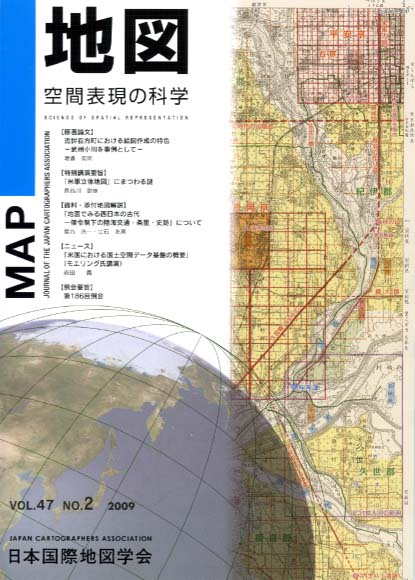
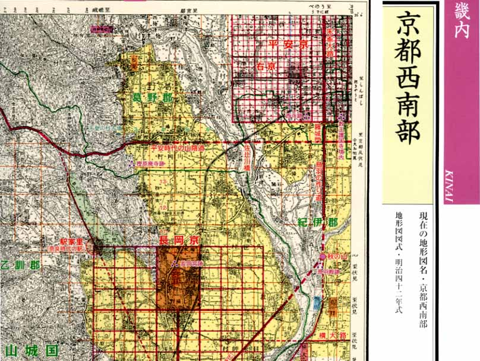
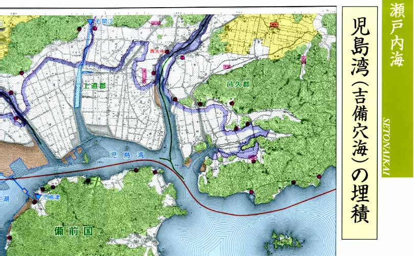

| 最 新 号 | バックナンバー | 添付地図目録 | 投 稿 規 程 |
Vol.47 No.2 （通巻１８６号） ２００９年
| 【原著論文】 | 近世在方町における絵図作成の特色 −武州小川を事例として− | 渡邉英明 |
| キーワード：絵図作成、江戸時代、在方町、都市図、村絵図 | ||
| 【特別講演要旨】 | 「米軍立体地図」にまつわる謎 | 長谷川敏雄 |
| キーワード：米軍、立体地図、1/25万地図、レリーフマップ、立体地勢図、米極東陸軍地図局（AMS-FE） | ||
| 【資料・添付地図解説】 | 「地図でみる西日本の古代 −律令制下の陸海交通・条里・史跡」について | 島方洸一・立石友男 |
| 【ニュース】 | 「米国における国土空間データ基盤の概要」（モエリング氏講演） | 森田 喬 |
| 【例会要旨】 | 第186回例会 | |
| 【書評・紹介】 | 近代日本の地図作製とアジア太平洋地域 −「外邦図」へのアプローチ− | 星埜由尚 |
| 地図でみる西日本の古代 | 星埜由尚 | |
| 【特別会員のページ】 | 緑川地図印刷株式会社 | |
| 株式会社パスコ | ||
| 【学会記事】 | ||
| 【添付地図】 | 地図でみる西日本の古代 −律令制下の陸海交通・条里・史跡 | |
| 海上保安庁刊行日本近海図索引図（平成21年3月現在） | ||
| 海上保安庁刊行航海用海図セル索引図（平成21年3月現在） | ||
|
≪No.47 No.2 表紙≫ |
|
|  |
|
|
|
≪No.47 No.2 添付地図≫ |
| 
本図を許可なく複製・利用することを禁止します。
 本図を許可なく複製・利用することを禁止します。
|